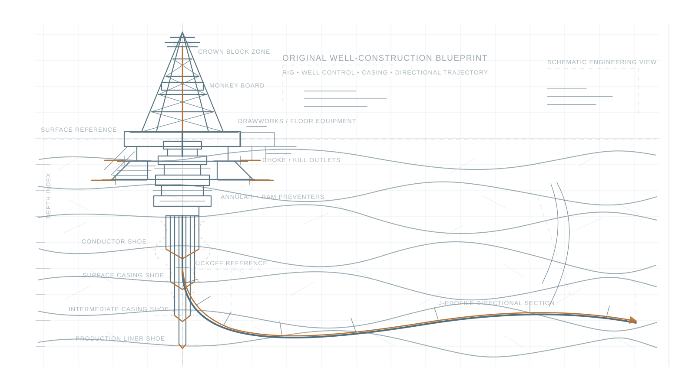

Drilling Engineering
- Basis of Design
- Drilling Programs
- Casing Design
- Drillstring Design
- Bit Hydraulics
- Torque and Drag
- Kick Tolerance
- Directional Well Planning
Drilling Engineering · Well Operations · Data Analytics
Oil & Gas professional with more than 15 years of experience in drilling engineering, wellsite supervision, HPHT wells, workover, snubbing, and rigless interventions across complex onshore operations.
Combining field experience, engineering design, contract management, and drilling data analytics to support safer, more efficient, and cost-effective well construction.

Profile
I am a Drilling Engineer and Drilling Supervisor with more than 15 years of experience in well construction, workover, and rigless operations.
My experience includes HPHT exploration wells, directional and horizontal wells, snubbing operations, coiled tubing, wireline, slickline, well integrity, and drilling operations using rigs up to 3,000 HP.
I currently support the engineering design and execution of development wells in the SRB-MMR Block and exploratory drilling operations, while acting as Contract Holder for a 2,000 HP drilling rig and several critical drilling services.
My work is focused on technical integrity, operational discipline, well control, compliance with international standards, cost management, and data-driven decision-making.
I am also developing capabilities in Python, Power BI, Machine Learning, and Artificial Intelligence to improve drilling performance analysis, benchmarking, cost control, and operational planning.
Technical scope
Team-supported outcomes
Digital workflows
Engineering and data-analysis tools used to support operational planning, performance tracking, benchmarking, and technical decision-making.
Operational discipline
Professional experience working with engineering practices, well-control requirements, integrity systems, and project-management frameworks aligned with API, NORSOK, ISO, IADC, WIMS, and drilling and workover PMS requirements.
Contact
Available for engineering, wellsite supervision, drilling supervision, and consulting opportunities in Bolivia and international operations.